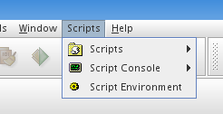
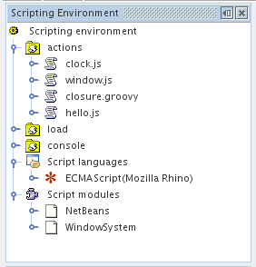

Using ScriptEngine
Configuring
So
once you have installed the modules, go to Tools -> Options
->
Miscellaneous -> Scripts and set the 'Script repository' field
to
the script directory that you've expanded. The script engine module
will look for 2
directory in its script repository directroy.
- actions
- all scripts that are saved here will appear in Tools ->
Scripts.
If you have added new script to this directroy do a Tools ->
Scripts
-> Reload. Currently the engine does not go recursively into the
directory.
- load - all scripts that are saved here will be loaded when
NetBeans starts up. This allows you to register events, etc.
- console - initialization scripts for script consoles. See Script Console for more information.
When
you configure the script repository path, there is a check box that
says 'Initialize script repository'. This creates the actions and load
directory in you script repository. If you are starting a new
repository, check this.
You can also add additional JSR-223compliant
scripting engines. Click on the 'Add' button under the 'Installed
script engines' table. A dialog box will pop up. Enter the full path of
the script engine JARS, one classpath per line into the text area.
Alternatively, you can also use the Browse button. Click OK when you
are done. You should now see the newly added script engines in the
'Installed script engines' table. ECMAScript (or JavaScript) engine
will always be available.
Moving Around
The ScriptEngine installs a menu item call Scripts in NetBeans main toolbar.

The Scripts menu contains the following submenus:
- Scripts - list of all the scripts and its subdirectory under the action directory in your script repository
- Script Console - list of all the script console you are able to
open. You can only open consoles to scripts that are recognized by
ScriptEngine. To all JSR-223 compliant engines see here. The console will open at the 'output' area in NetBeans. See Script Console for more information.
- Script Environment - Opens a window on the 'explorer' area in
NetBeans which provides a visual representation of the entire
ScriptEngines's environment.

As you can see, besides showing the three main directory under script
repository, the Script Environment window also shows what are the
language engine and script modules that are installed into the
environment. You execute a particular script by right clicking on it.
Script consoles can also be opened in the following manner. Right click
on a particular language under 'Script languages' node and select 'Open
Console'.